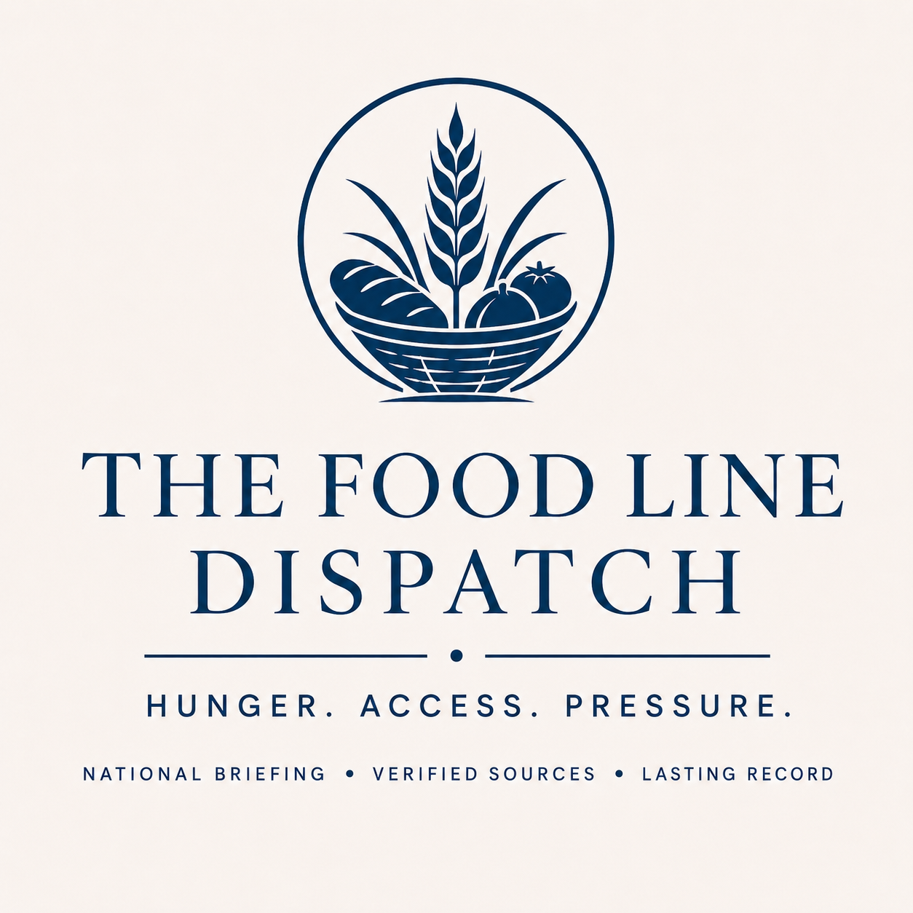

The Blue Fern Co.
Food Line Dispatch
The Food Line Dispatch tracks source-backed signs of food access pressure across the United States, including pantry strain, meal-service disruption, benefit disruption, price pressure, and local access failures.
Latest Briefing
As Kansans lose SNAP benefits, state lawmakers examine system hurdles
About Food Line
This dispatch is source-backed and uses verified pressure signals only.
Recent Editions
- 2026-10-03Central Florida families struggle to buy groceries after losing food stampsOrlando Sentinel reported that some Central Florida families were struggling to buy groceries after losing food-stamp benefits.Read briefing
- 2026-10-02PARC Kids Cafe provides after-school meals in Lafayette ParishKLFY reported that children in Lafayette Parish experiencing food insecurity have an after-school meal option through PARC Kids Cafe.Read briefing
- 2026-06-20No qualifying update0 sources checked
- 2026-06-19Charlotte nonprofits brace for summer hunger surgeAxios Charlotte reported that Charlotte nonprofits are preparing for a summer hunger spike as school meals end, Nourish Up serves about 12,000 households each month, and SNAP changes add pressure for families.Read briefing
- 2026-06-18No qualifying update0 sources checked
- 2026-06-17More Americans are hungry in the face of federal cuts, rising grocery pricesNational food insecurity pressure is rising as federal cuts and grocery prices increase.Read briefing
- 2026-06-16More families rely on food pantries. A food drive in St. Lawrence County aims to helpWorking families in St. Lawrence County are turning more to pantries in summer. Organizers cite school-meal gaps, transportation barriers, and rising gas and food costs.Read briefing
- 2026-06-14No qualifying update0 sources checked